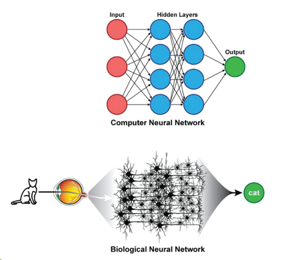
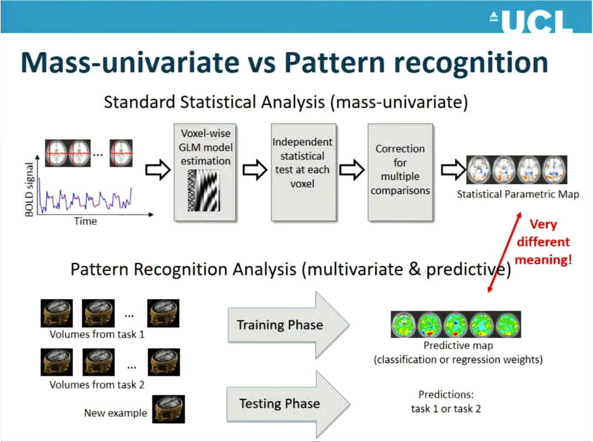
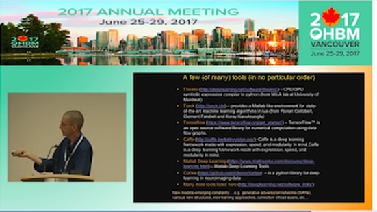
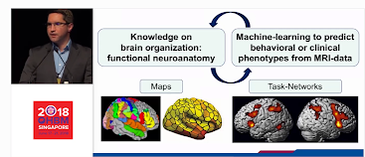
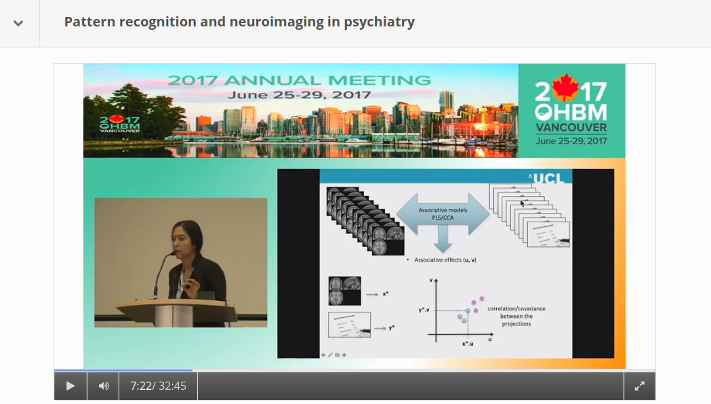

|
By Claude Bajada, Simon M. Hofmann and Ilona Lipp Edited by: Thomas Yeo and Lisa Nickerson Machine learning, deep learning and artificial intelligence are terms that currently appear everywhere; in the media, in job adverts… and at neuroimaging conferences. Machine learning is often portrayed as a mystical black box that will either solve all our problems in the future or replace us in our jobs. In this blog post, we discuss what the term machine learning actually means, what methods it encompasses, and how these methods can be applied to brain imaging analysis. Doing this, we refer to the OHBM OnDemand material, which contains some great videos explaining machine learning methodology and we provide examples for how it has been used in a variety of applications. If you are curious about machine learning tools, but are not really sure whether you want to jump on the bandwagon, then we hope that this post is right for you and will help you get started. What is machine learning? Machine learning is a broad term that goes beyond deep learning and incorporates many other methods that are discussed in this post. Many of these methods you may already be familiar with and have heard about in the context of classical statistics, such as linear regression. While machine learning ‘is built on the foundations of statistics and has absorbed much of its philosophy and many of its techniques over the years’ (Max Welling, 2015), a main focus of machine learning lies in generalization, i.e. finding patterns in data by training a computational model such that it can predict unseen data of the same or similar nature. Here, a balance between “overfitting” (fitting a model that is too complex and will only work well for the data used to train it) and “underfitting” (fitting a model that is too simple and works poorly even with the data used to train it) needs to be found, aiming at high sensitivity and specificity when applied to new cases. This is generally attempted by splitting the data into various sets, training model parameters on one set, choosing the best model by evaluating it in another set, and testing it in yet another set. Sometimes, the term “statistical learning” is used for machine learning methods that have their foundation in statistics. Introduction to statistical learning and The Elements of statistical learning are two great textbooks introducing some important concepts. What about Artificial Intelligence? Is that something different? Artificial Intelligence is a high-level, conceptual term that describes the movement to emulate “natural intelligence” in machines. Machine learning can be thought of as one set of statistical tools that can make machines more “intelligent”. What types of methods are there? The most popular machine learning techniques applied to neuroimaging can be split into two general groups: supervised and unsupervised learning. Supervised learning requires labelled data (e.g., data that has been labelled, classified, or categorized), whilst unsupervised methods detect patterns in unlabelled data. Different machine learning methods also differ with regard to their complexity. Both types of machine learning approaches can range from fairly simple linear models to much more complicated, non-linear, algorithms. The more complex the models get, the more computational power is required. Even though machine learning has been around for a long time, it has experienced a recent boom. In his OHBM OnDemand video, Vince Calhoun (6:30 min) explains why: it is not only because more and more data are available, but also because there has been an immense improvement in computational power (note that training neural networks can sometimes still take weeks!) and in better algorithms being developed and implemented in open source tools. Below we will discuss some important methods that deploy both supervised and unsupervised learning. We will also discuss some approaches that are unique to neuroimaging (such as multivoxel pattern analysis). Supervised Learning As described by Christophe Phillips in the OHBM 2017 course on pattern recognition (4:34 min), the idea of supervised learning is to train a machine to find a mapping between observed data, such as your fMRI images, and an explanatory variable, which could be a disease label or a cognitive score. We can then find new, unlabeled subjects and predict the disease label or cognitive score. Christophe further explains (7:10 min) that supervised machine learning problems can be further subdivided into discrete classification predictions and continuous, or regression, predictions. Either way, supervised learning (10:50 min) ultimately relies on a mapping function between input and target variables, the specification of the shape of this function and the optimization of its parameters. The following are some examples of various commonly used algorithms: Linear Regression Most of you are familiar with linear regression as a classical statistical technique. However, this old staple has refashioned itself as a supervised learning technique. We can think of regression as a predictive technique that uses one (or many) features in order to predict a response as one continuous value (7:35 min). The main difference between using regression as a standard statistical tool and as a machine learning tool is that in machine learning we test the predictive power of the linear model on unseen data that did not contribute to the training of the model. Logistic Regression The idea behind logistic regression is, at its root, exactly the same as linear regression. The only difference is the function that is fitted to the data. While in linear regression we fit a line (or some generalisation of it in n dimensions – e.g, a plane or a hyperplane), in logistic regression we fit a logistic function. The logistic function is that “S-shaped” curve that often pops up in many biological sciences. The logistic function has the very nice property of being bounded (often these boundaries are set to 0 and 1) and hence can be used to express a probability. By having a cut-off, usually half way, we can use logistic regression to categorise our sample, for example into patients and controls. Support Vector Machines (SVMs): Support vector machines (SVM) are a type of classification algorithms, where the aim is to draw a decision (or classification) boundary between sets of data points, so as to maximize the “separation” (or margin) between the sets. While this sounds fairly straightforward, it is often the case that the data points are not easily separable by a line or plane, for instance, if two circles are embedded into one another. Kernel SVMs use “kernels” to transform the data into an alternative space where it might become much easier to separate the two instances. Christophe describes kernels and SVMs (from 17:00 min) in his introductory lecture. There are additional parameters such as regularisation parameters, gamma and the margin, that are important to define how well the line separates the training data. For a more generic discussion of SVMs, this medium post does a good job at explaining the basics. Deep Learning: Deep learning is one of the most talked about classes of machine learning algorithms and the one that most excites the public’s mind. Despite all the hype, deep learning models are often treated as a black box, since their input-output-mapping is both analytically and intuitively hard to grasp. In Vince Calhoun’s OHBM educational lecture on deep learning approaches applied to neuroimaging, he explains that the foundation of deep learning lies in artificial neural networks. In fact, despite experiencing a boom in popularity in recent years, neural network modelling dates back to the 1950s when there was a lot of interest in creating a mathematical model of a biological neuron (This paper by Hassabis et al. (2017) provides a stimulating discussion on the relationship between neuroscience and artificial intelligence). This neuronal model became known as a perceptron. The most basic type of network is the multilayer perceptron (MLP), with artificial neurons (perceptrons) organised in hierarchical layers. The input to the network is propagated layer-by-layer, first through activation-functions in each node, and then through connections (weights) to the successive layer. The “deep” part of deep learning refers to the number of multiple hidden layers, i.e. the layers between the input and output of the network. In recent years, computational advances have allowed the training of deeper and deeper networks. Some types of neural networks that Vince describes are Restricted Boltzmann Machines (7:10 min), deep belief networks (8:20 min), convolutional neural networks (16:35 min) and others. As with other supervised learning algorithms, deep learning needs a training set and a test set. Furthermore, the more layers you have, the more (labeled) data and computational resources you usually need. In fact, deep learning increased in popularity once computing power increased to the point that deep networks were feasible, particularly after the availability of graphical processing units (GPUs), which are hardware chips originally developed for accelerated processing of digital videos and graphic rendering (3:10 min).  Figure from Zaharchuk et al. (2018) depicting the concepts underlying deep learning. Multi-voxel pattern analysis (MVPA): A common application of ML in brain imaging? In the classical analysis of structural and functional MRI, i.e. the application of a general linear model (GLM), each voxel is considered separately. Due to its linear equations, the approach is mathematically neat and tractable, however, this “massively univariate” approach disregards the interdependencies between multiple voxels (see Robert Cox’s talk about fMRI analysis methods at 4:16 min, Mike Pratt’s talk at 0:35 min). In light of dynamic brain processes that engage entire networks of the brain, the independence assumption of single voxels is controversial. In order to address this issue, a more recent class of statistical models, known as multi-voxel pattern analysis (MVPA), has been introduced to account for the joint contribution or ”combinatorial code“ of multiple voxels across the brain to the phenomenon of interest (see Janaina Mourão-Miranda’s talk at 6:08 min). That is, MVPA describes a class of pattern-recognition techniques, which are presented in Mike Pratt’s talk on MVPA (3:33 min), and in a session devoted to MVPA at OHMB 2017 (the corresponding videos can be found here).  Figure from Janaina Mourão-Miranda’s talk at 8:25 min MVPA draws from algorithmic strategies commonly used in machine learning. First, the data are split into a training set and test set. Then the classifier of choice (e.g., SVM) is trained on the former to discriminate various multi-voxel patterns corresponding to the experimental conditions, and validated on the latter. Validation is done by using the trained model to predict the conditions in the test set based on the multi-voxel input, which is often referred to as decoding (see Bertrand Thirion from 5:38 min, and Mike Pratt’s talk at 8:04 min). In decoding, we try to predict from multi-scale neural processes its representational content, such as percepts or cognitive states, mostly induced by experimental conditions (Pratt’s talk at 11:55 min). Classifiers can be linear or non-linear in nature, each having their own limitations. Linear classifiers (e.g., linear discriminant analysis, LDA) are considered easier to train and to interpret, however, their sensitivity depends on the individual contribution of each voxel in the observed pattern (see Jo Etzel’s talk at 18:00 min). Whereas non-linear classifiers (e.g., artificial neural networks, see Vince Calhoun’s talk) are able to find more complex relationships between patterns of voxels, they require training on large datasets. The term MVPA was coined by Norman, Polyn, Detre, and Haxby (2006), who introduced it within the framework of fMRI analysis. However, considering a broader definition of the term, most of the methods that MVPA encompases are not restricted to fMRI and can be equally applied to structural imaging (e.g., Zhang et al., 2018; or Cole et al., 2017; and see James Cole’s talk at OHBM 2017).  Vince Calhoun presenting a selection of available machine learning packages (at 22:50 min) Unsupervised Learning In supervised learning, in addition to the input data (for example, fMRI images), we also need the ‘ground-truth’ output, which may be labels (e.g. healthy vs condition) or scores (some sort of cognitive or behavioural scores). However, frequently we either do not have appropriate labels, or the labels that we do have are unreliable, for example, in psychiatric imaging, as explained by Verena Kebets in her video. In this case, unsupervised machine learning methods open new doors. Clustering: In the neuroimaging community, the unsupervised machine learning technique of clustering is best known by its application to estimating brain parcellations. Brain parcellation is not a new problem and neither is it one that necessarily involves machine learning. All neuroimagers have heard of the 19th century neuroanatomist Korbinian Brodmann who labeled brain regions according to their cytoarchitecture -- the original brain mapping! As Simon Eickhoff explains in last year’s keynote, cytoarchitecture is not the only feature by which to parcellate the brain; there are others, such as receptor architecture, cortical myelin structure, and connectivity structure.  Simon Eickhoff shares his views on the role of machine learning in brain imaging (at 29:51 min) Unsupervised clustering methods are ideal for data with known differences based on features of interest where we want to automatically group brain regions according to these features. The simplest, and probably most widely used technique available, is k-means clustering. In neuroimaging, this is done by creating a feature vector per voxel in a region of interest, for example, structural or functional connectivity information. These voxels can now be thought of as points in an n-dimensional feature space. The k-means algorithm then attempts to maximize within-group similarity. Unfortunately, k-means clustering requires an a priori knowledge of the amount of groupings (k) one is interested in (although there are some iterative techniques to try to establish the number of k). Other approaches to clustering, such as hierarchical clustering or spectral clustering, have the same basic idea of splitting up data (in this case brain voxels) into discrete groups, or parcels, but have slightly different assumptions or tricks. For example, hierarchical clustering assumes that the data have a hierarchical structure and so you could split the brain into two groups, each of which can be split into another two groups, until we reach the level of individual voxels. Or you could start from individual voxels and work your way up. On the other hand, spectral clustering has an additional step (the spectral transformation), which allows you to disregard weak similarity. Sarah Genon, in her educational course lecture, describes how to perform such analyses using diffusion MRI data. Laplacian EigenMaps / Diffusion Embedding: Sometimes you may not be interested in grouping voxels into a fixed number of parcels, but rather explore the relationship of voxels in a region of interest based on a feature of interest. In his educational talk, Daniel Margulies describes techniques that can be used to investigate the connectopies, or connectivity maps, of the brain. The initial approach is similar to the one described above, where you create a feature vector for every voxel in the brain. These features are then compared to each other using a measure of similarity to create a similarity, or affinity, matrix. This matrix is then decomposed and new vectors are obtained which describe the principal gradients of similarity across a region of interest, or indeed the whole brain. Daniel’s keynote describes how such types of analyses can be used to elucidate topographic principles of macroscale cortical connectivity. Associative models: Associative models, such as partial least squares (PLS) or canonical correlation analysis (CCA), are not exactly supervised or unsupervised. In supervised learning we generally have a multivariate input (e.g. brain images) and a univariate output (labels). In unsupervised learning, we only have one set of multivariate input data, such as the connectivity information for brain parcellation. In PLS or CCA, we want to discover relationships (associations) between two sets of multivariate inputs (e.g., brain images and behavioral/clinical scores).  Figure from Janaina Mourão-Miranda’s talk at 7:22 min As Janaina Mourao-Miranda explains in her video (2:25 min), psychiatric conditions often have unreliable labels. To deal with this, she uses associative models (e.g., PLS), trying to find a linear combination of neuroimaging predictors that are most strongly associated with a linear combination of multivariate clinical and behavioural data. This provides a data-driven way to generate summary labels that can possibly shed new light on clinical conditions. It is possible to do significance testing on associative models to make inferences. Valeria Kebets describes (11:20 min) how to perform permutation tests in order to determine which components are significant, how to determine whether components are expressed differently across groups, and, finally, which variables drive the extracted components. In her video, Janaina also goes into the details about how her group applies a multiple hold-out validation framework in partial least squares analysis (16:50 min). What do I need to consider when using machine learning tools for brain imaging analysis? As explored in the previous paragraphs, machine learning techniques open many doors for brain imaging. They can help make predictions that depend on complex interactions, help find patterns in our data that we have been previously unaware of, and also automate time consuming manual tasks, such as segmentations (e.g. see Pim Moeskop’s video). However, there are also pitfalls that must be considered. First, the more complex and powerful machine learning techniques really need large datasets. In his video, Andrew Doyle (25:30 min) discusses how neuroimaging applications differ from classical image processing problems, with brain imaging data usually being very large and high-dimensional data, while sample sizes are comparatively small. For some applications (e.g. image segmentation or MVPA), smaller sample sizes may not be a big issue, but for others (such as patient classification) they may. A recent publication by Arbabshirani et al. (2018) explores the reason for why making individual predictions from brain imaging data is challenging. Another paper by Varoquaux (2018) focuses on the challenges with model cross validation on small sample sizes. Of course, the noisier the data, the more data points are needed, and brain imaging data are renowned to be noisy. Additionally, if no reliable labels can be provided, the best supervised learning algorithms will not be able to succeed. Another problem, in particular with the more complex methods such as deep learning, is the challenge of assessing how biologically meaningful the resulting models are. Recent efforts have gone into better understanding and evaluating what is actually happening in the deep layers (e.g. watch Alex Binder’s video). However, resulting models may not teach us anything about biological or pathological mechanisms, and they may actually represent biases that exist in our training data, limiting their generalisability to other data. For example, this year’s replication award was awarded to a study that showed lack of generalisability of some published models. Until these issues are fully resolved by the community, as individual researchers the best we can do is to understand the algorithms we are using and their limitations. That way we can choose the most suitable techniques, and rigorously apply them on suitable sample sizes and avoid overfitting. Luckily, there is a vast amount of online resources on machine learning techniques, including textbooks (e.g. Bishop, 2006), Andrew Ng’s famous Coursera courses on machine learning and deep learning, and online blogs and forums. Numerous papers from the MRI community provide overviews of machine learning tools for neuroimaging, or more specific examples, such as how machine learning is shaping cognitive neuroimaging, and how to use machine learning classifiers for fMRI data. OHBM’s OnDemand has an extensive archive of videos from education courses and talks on machine learning applications for neuroimaging that we’ve included in this article and, we also expect many exciting new educational and symposium talks on the use of machine learning techniques in brain imaging at this year’s OHBM in Rome, so watch out for those, too!
2 Comments
Seonhye Gu
6/10/2020 08:34:03 pm
Thank you! 1/26/2021 02:14:43 am
thank you so mush for share your information i just really enjoyed to read your article and expecting more information from this website i really want to appreciate your work please share more and more Your comment will be posted after it is approved.
Leave a Reply. |
BLOG HOME
Archives
October 2022
|
 RSS Feed
RSS Feed